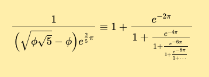

FAQ
Contents
User Interface[edit]
Unselect multiselect lists items (like Topics)[edit]
To unselect items in a list, press the Command key and click the left mouse button at the same time (for Apple keyboards) or the Window key (located at the lower left of the keyboard next to the Ctrl key) and the left mouse button at the same time (for Windows keyboards)
Authors[edit]
How can I add an author in the Author List?[edit]
First of all, are all the authors currently in the authors list in the DCC?
You may search for the names in the page: https://dcc.ligo.org/cgi-bin/private/DocDB/ListAuthors
If any of the authors are not in the list, you may add them, by putting their names and institution in the page: https://dcc.ligo.org/cgi-bin/private/DocDB/AuthorAddForm Currently, end users cannot add institutions that are not in the list. If you need one added, you'll need to send a request to dcc-help@ligo.org.
You can normally find the Add Authors page from the DCC Home page (https://dcc.ligo.org/cgi-bin/private/DocDB/DocumentDatabase )
- click 'List: Authors', located right below Calendar of events
- click on the Add link in the 'List of Authors' page.
How can I select more than one author for my document?[edit]
To select multiple authors, you will need to: keep the CTRL button depressed while selecting authors (from the Authors list) for Windows computers or keep the Apple button depressed while selecting authors for Mac computers.
Why can't I find an author or their documents?[edit]
The DCC distinguishes 'active' authors who are current LSC members, and 'inactive' authors who are not. To include the inactive authors, click 'Preferences' to the left of the DCC home page, then select 'All Authors' in place of 'Active Authors Only'.
Document Upload[edit]
I uploaded the wrong file. How can I remove the file from my DCC file card?[edit]
- 1) Click on the "change metadata" button.
- 2) Type in the word "delete", "remove" or "ignore" in the file description box for the file you would like to delete.
- 3) Scroll down and click on the "change metadata" button and the file will automatically be removed.
How do I upload a document from the old DCC?[edit]
- From the Reserve a Document Number page, click on Use a document number from the old DCC button.
- Type the old DCC number in the LIGO Document Revision page and the rest of the required fields.
- It is recommended that you list the old DCC number in the Notes and Changes section. For example: "Migrated from the old DCC: LIGO-D080151-A-D"
- Click on the Use DCC Number button.
- Once the document file card is created (the -x0 version of the document), you may Upload the file as it was named in the old DCC.
- An example D070250-v1
Access Controls[edit]
What groups are available to control access to documents?[edit]
https://dcc.ligo.org/cgi-bin/private/DocDB/ListGroups
How to see what documents are visible to which groups?[edit]
https://dcc.ligo.org/wiki/index.php/Onion
How to see who is a member of which access groups?[edit]
https://dcc.ligo.org/cgi-bin/private/DocDB/ListGroupUsers
How to see what access groups an individual belongs to?[edit]
https://dcc.ligo.org/cgi-bin/private/DocDB/ListEmailUsers
Events[edit]
How do I create an event?[edit]
Step 1 : Create the event[edit]
{kind=link}
From the DCC Home Page, click on Events by date then click on the [+] on the event start date. This will open the "create event" page, follow instructions.
Step 2: Set up sessions[edit]
On the event page, click on "Create a session" and follow instruction, adding one entry for each session.
Step 3: Add agenda items[edit]
- From the event page, clock on "modify session": this is best done by individual session conveeners, otherwise, to a single person, it takes a LONG TIME!
- When adding agenda items, it is faster to add title and speaker in the "title field": once the talks are matched with DCC entries, the software will take care of filling title, author and topic fields properly, as long as the authors did fill the document form appropriately.
- Always give a DURATION (needed by the software to calculate time of the talks in the agenda).
- Input the break as an agenda item, so that the timing is calculated right.
- Add the break as if it were an agenda item (just fill "break" in the title and duration, no author or topic).
- If there are more talks than allowed slots, click on "modify session and talks": more slots will open up.
Step 4: View the event[edit]
- Finally, click on "Display session" to see the agenda.
How do I create an multi-day event?[edit]
How do I match the presentation materials with the agenda?[edit]
- Match agenda items with talks: from the session agenda, click on Edit on each line
- A popup screen will open, with scroll down menus to fill details, but further below there is a list of possible matches: talks associated to the event that are not matched to agenda items yet (so for this to work it is important authors connect their doc number to the event).
- The list of possible talks is ordered, best first, and if the title is the same in the document and in the agenda, the first entry is usually the right one.
- Click on "confirm" next to the talk that matches the agenda item, and once the software is done it will give the option to close the popup window and reload. Now the agenda will link to the document, the author, topic and file field will be filled.
Un-watching a Document[edit]
How can I remove documents from my "Watch" list?[edit]
- 1) From the DCC Home page, select My Account (in the left-hand-side box), this will take you to Update Notification Preferences (https://dcc.ligo.org/cgi-bin/private/DocDB/SelectEmailPrefs ).
- 2) Scroll down and to the “Notification for Individual Documents” section.
- 3) Edit the list of document you no longer wish to Watch.
Linking to a Document[edit]
In the past, the URL for a DCC document was long and used a document identifier that is different from the LIGO document number. The new scheme is much simpler; any of these will take you to the metadata page for a private document:
- https://dcc.ligo.org/M1000066
- https://dcc.ligo.org/M1000066-v17
- https://dcc.ligo.org/LIGO-M1000066
- https://dcc.ligo.org/LIGO-M1000066-v17
The "LIGO-" string is optional. If the version number "-v17" is omitted, the latest version is assumed.
And the metadata page for a public document is obtained with the modifier /public, for example:
- https://dcc.ligo.org/M080375/public
- https://dcc.ligo.org/M080375-v2/public
- https://dcc.ligo.org/LIGO-M080375/public
- https://dcc.ligo.org/LIGO-M080375-v2/public
Same format can be used for command-line download of public documents:
You can link to "Main" file by adding /main to the URL for either public or non-public documents, with or without the "LIGO-" prefix, and with or without version number, for example:
- https://dcc.ligo.org/M980279/main
- https://dcc.ligo.org/LIGO-M980279/main
- https://dcc.ligo.org/LIGO-M980279-x0/main
- https://dcc.ligo.org/M980279/main/public
- https://dcc.ligo.org/M980279/public/main
- https://dcc.ligo.org/M980279-x0/public/main
- https://dcc.ligo.org/LIGO-M980279-x0/main/public
(Note: This doesn't work if more than one file is listed as Main.)
You can also link to individual files using the file suffix, adding the modifier /pdf to the URL, for example:
- https://dcc.ligo.org/M080375/pdf
- https://dcc.ligo.org/M080375/pdf/public
- https://dcc.ligo.org/M080375/public/pdf
The same idea works for many kinds of file(avi, bmp, dat, doc, docx, dwg, easm, fpd, gif, htm, html, jpeg, jpg, mov, mpeg, mpg, odp, pdf, png, ppt, pptx, ps, slddrw, sldprt, tar, tex, tif, tiff, txt, wav, wmv, xls, zip).
However, if there is more than one pdf file, this URL cannot know which one you want, and thus will return to the metadata page for the document. For example there are two pdf files in this document: https://dcc.ligo.org/LIGO-G1200018/pdf
Legacy document system (the "old DCC") overview[edit]
The legacy document system has an internal (allows access to all documents) and public (allows access to public documents only) user interfaces. Business applications are run on antares and pherkab. Both servers run on Windows NT and WebBase as server software, and use MS Access RDBMS consisting of MS Jet Engine and Access GUI. User access restrictions to non-public documents are implemented by limiting search options at the publicly accessible search page to public documents only. A complete set of documents is accessible at the internal search page. Submitting a query via either UI returns a document card that consists of the record's metadata and links to associated files, if any. The publicly accessible component of document filesystem is located on cheetah:/home/docs/public/. Cheetah is running Solaris9 and apache2. The non-public component is located on arcturus:/home/docs/internal. Arcturus is running Solaris10 and apache2. The non-public filesystem is accessible from a limited range of IP addresses restricted to the LIGO Lab and a limited number of institutions/individuals outside of the Lab.
MathJax[edit]
What is MathJax ?[edit]
From the MathJax project documentation [1] :
MathJax is an open-source JavaScript display engine for LaTeX,
MathML, and AsciiMath notation that works in all modern browsers.
It is an APi that is activated in the document pages of DCC, detects chunks of valid latex expression and renders them properly.
For instance:
\frac{1}{\Bigl(\sqrt{\phi \sqrt{5}}-\phi\Bigr) e^{\frac25 \pi}}
\equiv 1+\frac{e^{-2\pi}} {1+\frac{e^{-4\pi}} {1+\frac{e^{-6\pi}}
{1+\frac{e^{-8\pi}} {1+\cdots} } } }
will look something like: 
{kind=link}
How to create Math expression or Symbols in Latex[edit]
MathjJax simply type your latex code where you want to see the math expression. You can start with a known symbol \Alpha or an inline marker $$ ... $$ or \( ... \)
At this time we have not installed mathjax extension of latex aliases. The recommended Latex code for the Solar Mass symbol it M_{\odot}
StackExchange has an excellent summary https://math.meta.stackexchange.com/questions/5020/mathjax-basic-tutorial-and-quick-reference
A complete reference of tex as understood by MathJax is at http://docs.mathjax.org/en/latest/tex.html
UI Controls for MathJax[edit]
If Mathjax detects a renderable Math expression a footnote is added at the end of the document abstract: The Mathjax badge is clickable and navigates to Mathjax very own documentation, then the verb Enable/Disable toggles between the rendered or Latex Source code rendering mode.
At hte bottom of the page is a 'What is MathJax?' link that pops up a DCC Help blurb about Mathjax
You can also use Mathjax very own UI by revealing a contextual menu by right clicking on the math expression.